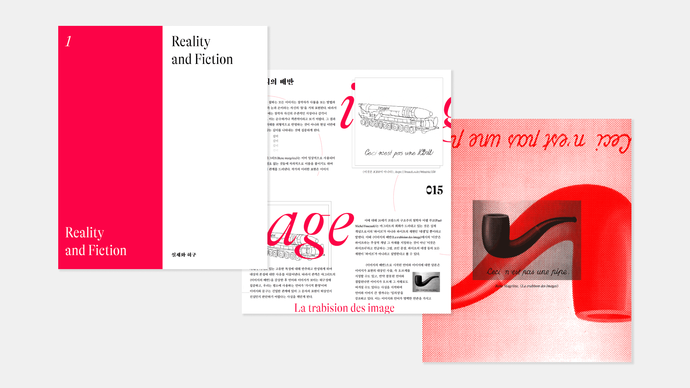
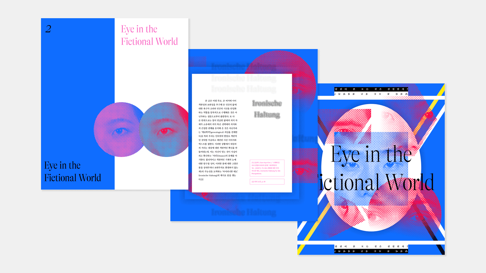

-
아틀라스: 닿을 수 없는 세계를 잇다 Atlas: Connect the untouchable world
은나연 Eun Nayeon
-
이 작품, < 아틀라스(Atlas) >는 지식의 집적 불가능성과 존재 방식의 파편화 다룬다. 모든 이미지는 창작자의 몸(눈과 손)을 거쳐 표현되기 때문에 객관적 재현으로 볼 수 없다. 더욱이 디지털 환경에서는 시간적, 공간적 틈의 종류가 더욱 다양화되고 극대화된다. 정치적, 물리적 장벽은 이런 간극을 더욱 비대하게 만든다. 남한 사람에게 북한은 접근하지 못한 채 인터넷이나 책을 통해 떠돌아다니는 파편적 자료만을 통해 부분적으로만 이해할 수 있는 대상이자, 정치적으로는 하나의 '금기된 표식(XX)’으로 존재한다. 이 작품은 ‘이미지 검색 기술’을 통해 수집한 북한에 관한 정보들로 지극히 주관적인 맥락과 가치를 만들어낸다. 하지만 이는 개인의 재창조한 도상으로 허구일 뿐이다. 어쩌면 매체를 넘어 대상의 실체에 닿기는 불가능한 것이 아닐까. 허구를 바탕으로 한 상상의 세계는 가치의 상대성을 인식하게 해 우리에게 새로운 제3의 가능성(아이러니한 태도)을 제시한다. 허구의 재구성을 통해 자신만의 허구의 세계를 상상해보기를 바란다. < Atlas > is concerned with the inability of amassing information and the disintegration of one's way of life. Because all images are created using the creator's body (eyes and hands), they cannot be considered objective representations. Furthermore, the sorts of temporal and geographical gaps are further broadened and maximized in the digital environment. This divide is exacerbated by political and physical barriers. For South Koreans, North Korea is a political 'taboo mark (XX)' that can only be partially understood through incomplete information about on the Internet or books without access. With information on North Korea gathered using “image search technology”, this piece offers an immensely subjective context and value. However, this is a fictitious icon produced by an individual. Perhaps it is impossible to grasp the subject's reality outside the media. By understanding the relativity of values, the fictional world offers us a new third possibility (ironic attitude). Through the reconstruction of fiction, now it’s time to envision your own fictional universe.
- 
- 